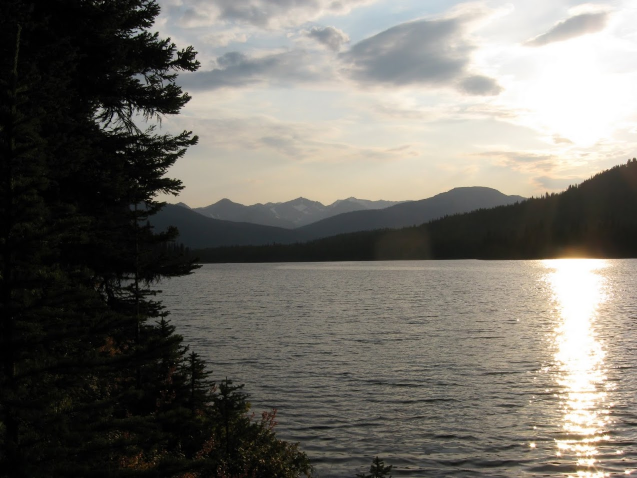

In 2021, I completed my law degree at UBC’s Allard School of Law. Some of the highlights for me were my time with the Canadian Journal of Family Law, the Gale Moot, seminar courses and directed research, and my term at the Indigenous Community Legal Clinic. This summer, I am working on personal research and writing projects and doing some volunteer work. Long term, I hope to do work that gives more of us more confidence in the outcomes of the legal system and government decision-making in general. I am interested in the many overlaps of law and technology, especially algorithmic decision-making and copyright.
I am also a computer scientist. In that field, I’ve focused on visual object recognition, machine learning, and applications of deep neural networks. My interest has shifted toward fairness, accountability, and transparency. I stay up to date with recent publications and continue to review for ICLR, ICML, and NeurIPS.
All of my work is connected to the relationships that I’ve been part of over the years: family, friends, instructors, supervisors and mentors, students, and the places that I’ve lived. I am a settler born in Winnipeg, Treaty 1 Territory, traditional territory of the Anishinaabe, Cree, Oji-Cree, and Dakota Peoples, and the homeland of the Métis Nation. I now live in Vancouver, which overlaps with the traditional, ancestral, and unceded territories of the Musqueam, Squamish and Tsleil-Waututh.

Recent updates
- Reading list from a settler law student (updated June 15, 2021)
- Development plans, zoning, and public hearings in Vancouver (posted May 31, 2021)
- The double-aspect doctrine (updated May 4, 2021)
If you’d like to get updates from me whenever I write something, sign up for my tinyletter here.
Here’s where you can find me elsewhere online:

Selected publications
Sancho McCann, “Copyright Throughout a Creative AI Pipeline” 19 Can J Law & Tech [forthcoming in 2021].
Sancho McCann, “Finding Harmony: Law Society of British Columbia v Trinity Western University”, Case Comment, (2019) 28 Dalhousie Journal of Legal Studies 95.
Sancho McCann, Object classification and localization using spatially-localized features (PhD Dissertation, University of British Columbia, 2014) [unpublished].
Sancho McCann & David G Lowe, “Spatially-local coding for object recognition” in 11th Asian Conference on Computer Vision (Springer, 2012) 204.
Sancho McCann & David G Lowe, “Local naive Bayes nearest neighbor for image classification” in Computer Vision and Pattern Recognition (IEEE, 2012) 3650.
Sancho McCann, “Atmospheric Sounding Visualization” (course report, Information Visualization, Department of Computer Science, University of British Columbia, 2006) [unpublished].
A more complete list is at my Google Scholar profile.
Notes
1. ↑ Learn more about the land where you live at native-land.ca.